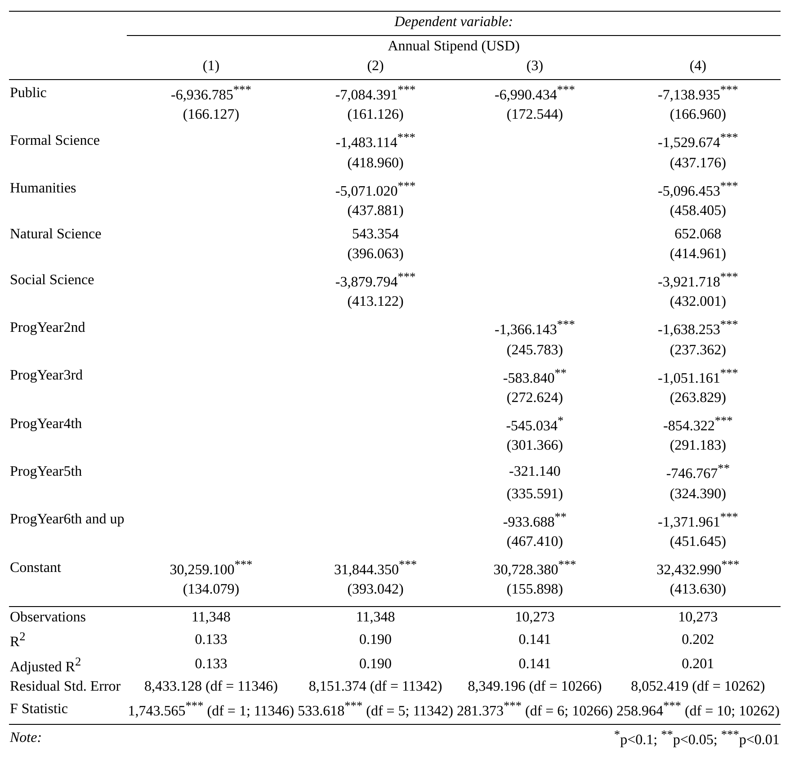

Please cite as:
Hlavac, Marek (2022). stargazer: Well-Formatted Regression and Summary Statistics Tables.
R package version 5.2.3. https://CRAN.R-project.org/package=stargazer
Part 1
Research Question
In the United States, wage stagnation has become a hot-button issue for many people in various fields of employment. Graduate students have been at the center of this issue in recent years- strikes for wage increases and cost-of-living adjustments have taken place at multiple universities throughout the country. Because PhD students often do not have the time to earn extra income (and their contracts often prohibit them from pursuing work elsewhere), how much they will earn from their stipend is a huge factor in considering where to pursue their research (Powell, 2004; Soar et al., 2022). My research question is: Is university ownership status (public vs. private) a predictor of the value of a PhD stipend?
Hypothesis
H₀:University ownership status is not a predictor of the value of a PhD stipend.
H₁: University ownership status is a predictor of the value of a PhD stipend.
Dataset
This dataset is comprised of self-reported survey data collected by PhDStipends.com. Respondents are asked their university, department, academic year, and year in the program. They are also asked whether they receive a 12-month or 9-month salary, gross pay, and required fees. PhDStipends automatically calculates the LW Ratio (living wage ratio), which is the stipend divided by the living wage of the county the university is located in.
In addition to this information, I also manually categorized universities by their ownership status as public or private, and assigned each program to 1 of five broader academic disciplines: Business/Policy, Social Science, Natural Science, Formal Science, and Humanities. Due to a computer issue much of my work was lost, so the dataset is currently incomplete. The analysis that follows is based on the information I was able to recover or reenter within a reasonable period of time.
The variables of interest for me are the ownership status, gross pay, program year, and academic discipline.
Rows: 11394 Columns: 13
── Column specification ────────────────────────────────────────────────────────
Delimiter: ","
chr (7): University, State, Status, Department, Category, Academic Year, Pro...
dbl (6): Pay, LW Ratio, 12 M Gross Pay, 9 M Gross Pay, 3 M Gross Pay, Fees
ℹ Use `spec()` to retrieve the full column specification for this data.
ℹ Specify the column types or set `show_col_types = FALSE` to quiet this message.
summary(csv)
University State Status Department
Length:11394 Length:11394 Length:11394 Length:11394
Class :character Class :character Class :character Class :character
Mode :character Mode :character Mode :character Mode :character
Category Pay LW Ratio Academic Year
Length:11394 Min. : 1 Min. :0.000 Length:11394
Class :character 1st Qu.:20000 1st Qu.:0.880 Class :character
Mode :character Median :26000 Median :1.130 Mode :character
Mean :25741 Mean :1.094
3rd Qu.:31500 3rd Qu.:1.325
Max. :95000 Max. :4.500
NA's :46 NA's :423
ProgYear 12 M Gross Pay 9 M Gross Pay 3 M Gross Pay
Length:11394 Min. : 1 Min. : 15 Min. : 4
Class :character 1st Qu.: 24000 1st Qu.:16500 1st Qu.: 3000
Mode :character Median : 29000 Median :20000 Median : 5000
Mean : 28473 Mean :20121 Mean : 5185
3rd Qu.: 33000 3rd Qu.:23850 3rd Qu.: 6128
Max. :140000 Max. :90000 Max. :55816
NA's :3478 NA's :7940 NA's :10228
Fees
Min. : 1
1st Qu.: 500
Median : 1000
Mean : 1967
3rd Qu.: 2000
Max. :93725
NA's :6906
head(csv)
# A tibble: 6 × 13
University State Status Depar…¹ Categ…² Pay LW Ra…³ Acade…⁴ ProgY…⁵ 12 M …⁶
<chr> <chr> <chr> <chr> <chr> <dbl> <dbl> <chr> <chr> <dbl>
1 Florida In… FL Public Busine… Busine… 1 0 2016-2… 1st 1
2 Duke Unive… NC Priva… Art, … Humani… 4 0 2013-2… 6th an… NA
3 University… KY Public Sociol… Social… 15 0 2016-2… <NA> NA
4 West Virgi… VA Public Econom… Social… 16 0 2022-2… 1st 23
5 Texas A&am… TX Public Counse… Social… 20 NA 2017-2… 1st 20
6 Stevens In… NJ Priva… Comput… Formal… 23 0 2020-2… 1st NA
# … with 3 more variables: `9 M Gross Pay` <dbl>, `3 M Gross Pay` <dbl>,
# Fees <dbl>, and abbreviated variable names ¹Department, ²Category,
# ³`LW Ratio`, ⁴`Academic Year`, ⁵ProgYear, ⁶`12 M Gross Pay`
Part 2
Visualizations
I’ll start with a histogram of all stipends, regardless of university ownership status.
viz <- csv %>%filter(Status %in%c("Public", "Private")) %>%filter(Pay<65000)ggplot(viz, aes(x=Pay)) +geom_histogram(fill="#15391c", color="#FFFFFF")+labs(y ="Count", x ="Annual Gross Pay",title ="Stipend Distribution")+theme_light()+theme(plot.title=element_text(hjust=0.5, size =20))
`stat_bin()` using `bins = 30`. Pick better value with `binwidth`.
The distribution appears somewhat normal, with annual pay most frequently in the range of $20,000 to $30,000 annually.
Next I will generate 2 boxplots: one for public universities, and one for private.
There are quite a few outliers for both categories, but we can see that median pay is higher in private universities than in public universities. There are also significantly more outliers below the 1st quartile in private universities than in public.
Hypothesis Testing
Creating Models
Explanatory Variable: Ownership Status (Status)
Response Variable: Gross Pay (Pay)
Control Variable: Academic Discipline (Category), Program Year (ProgYear)
First I will run a model for gross pay, using as.factor() to convert ownership status into dummy variables.
fit1=lm(Pay ~as.factor(Status), data = csv)summary(fit1)
Call:
lm(formula = Pay ~ as.factor(Status), data = csv)
Residuals:
Min 1Q Median 3Q Max
-30255 -4738 678 4825 66678
Coefficients:
Estimate Std. Error t value Pr(>|t|)
(Intercept) 30259.1 134.1 225.68 <2e-16 ***
as.factor(Status)Public -6936.8 166.1 -41.76 <2e-16 ***
---
Signif. codes: 0 '***' 0.001 '**' 0.01 '*' 0.05 '.' 0.1 ' ' 1
Residual standard error: 8433 on 11346 degrees of freedom
(46 observations deleted due to missingness)
Multiple R-squared: 0.1332, Adjusted R-squared: 0.1331
F-statistic: 1744 on 1 and 11346 DF, p-value: < 2.2e-16
Based on the p-values, it does seem that ownership status is statistically significant with regards to pay. Now I will plot this model.
Next I will create a model adding the control variable “Category” (academic discipline).
fit2=lm(Pay ~as.factor(Status) + Category, data = csv)summary(fit2)
Call:
lm(formula = Pay ~ as.factor(Status) + Category, data = csv)
Residuals:
Min 1Q Median 3Q Max
-32298 -4114 131 4697 69120
Coefficients:
Estimate Std. Error t value Pr(>|t|)
(Intercept) 31844.4 393.0 81.020 < 2e-16 ***
as.factor(Status)Public -7084.4 161.1 -43.968 < 2e-16 ***
CategoryFormal Science -1483.1 419.0 -3.540 0.000402 ***
CategoryHumanities -5071.0 437.9 -11.581 < 2e-16 ***
CategoryNatural Science 543.4 396.1 1.372 0.170125
CategorySocial Science -3879.8 413.1 -9.391 < 2e-16 ***
---
Signif. codes: 0 '***' 0.001 '**' 0.01 '*' 0.05 '.' 0.1 ' ' 1
Residual standard error: 8151 on 11342 degrees of freedom
(46 observations deleted due to missingness)
Multiple R-squared: 0.1904, Adjusted R-squared: 0.1901
F-statistic: 533.6 on 5 and 11342 DF, p-value: < 2.2e-16
All academic disciplines appear to be statistically significant. The R-squared value here is higher than the previous model.
Next I will create a model adding the control variable “ProgYear” (program year).
fit3=lm(Pay ~as.factor(Status) + ProgYear, data = csv)summary(fit3)
Call:
lm(formula = Pay ~ as.factor(Status) + ProgYear, data = csv)
Residuals:
Min 1Q Median 3Q Max
-30705 -4704 428 4855 66262
Coefficients:
Estimate Std. Error t value Pr(>|t|)
(Intercept) 30728.4 155.9 197.106 < 2e-16 ***
as.factor(Status)Public -6990.4 172.5 -40.514 < 2e-16 ***
ProgYear2nd -1366.1 245.8 -5.558 2.79e-08 ***
ProgYear3rd -583.8 272.6 -2.142 0.0323 *
ProgYear4th -545.0 301.4 -1.809 0.0706 .
ProgYear5th -321.1 335.6 -0.957 0.3386
ProgYear6th and up -933.7 467.4 -1.998 0.0458 *
---
Signif. codes: 0 '***' 0.001 '**' 0.01 '*' 0.05 '.' 0.1 ' ' 1
Residual standard error: 8349 on 10266 degrees of freedom
(1121 observations deleted due to missingness)
Multiple R-squared: 0.1412, Adjusted R-squared: 0.1407
F-statistic: 281.4 on 6 and 10266 DF, p-value: < 2.2e-16
Program year does appear to be statistically significant. R-squared is comparable to the original model.
Finally, I will create a model using both control variables.
fit4=lm(Pay ~as.factor(Status) + Category + ProgYear, data = csv)summary(fit4)
In this model, the disciplines of Business/Policy and Formal Science are the only ones which are not statistically significant. Multiple and Adjusted R-squared values are the highest of all the models, so it has the lowest variance. Therefore I believe this model is the best fit. A comparison table:

Diagnostic Plots
par(mfrow=c(2,3)); plot(fit1, which=1:6)
par(mfrow=c(2,3)); plot(fit2, which=1:6)
par(mfrow=c(2,3)); plot(fit3, which=1:6)
par(mfrow=c(2,3)); plot(fit4, which =1:6)
The large number of categorical variables in my data makes plotting any model challenging, but the fit is not great for any model. The normal Q-Q plots consistently violate assumptions of normality. This is likely due to several outliers, especially on the higher end of the pay scale. Similarly, the Residuals vs. Fitted plots are largely homoskedastic but show many outliers.
Summary
We can see that university ownership status is a statistically significant predictor of the value of a PhD stipend, and that graduate workers at private universities earn more than those at public universities. This may indicate a public-private pay gap in American universities. However, I believe under- and over-reporting stipend values created a lot of variability. Further research should consider pulling from official databases such as university payrolls.
It is ultimately unsurprising to see that graduate workers at private universities are paid more, given the nature of funding differences between private and public universities. It is also unsurprising that the median wage for either type of university is very low. I hope more research can be done with the hope of improving living and working conditions for graduate student workers.
References
Hlavac, Marek (2022). stargazer: Well-Formatted Regression and Summary Statistics Tables. R package version 5.2.3. https://CRAN.R-project.org/package=stargazer
Soar, M., Stewart, L., Nissen, S. et al. Sweat Equity: Student Scholarships in Aotearoa New Zealand’s Universities. NZ J Educ Stud (2022). https://doi.org/10.1007/s40841-022-00244-5